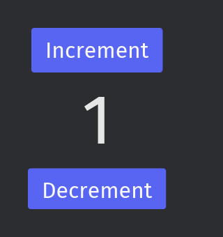

rawris rust augmented with rust
A Rust interpreter for your dev builds.
Put // rawr on the first line of a file in your Cargo crate. rawr run checks the marked files and then interprets them. Cargo compiles the same crate for release.
rawr can also run Rust scripts inside your app.
// rawr
enum Item {
Book { price: f64 },
Coffee { cups: i64 },
}
trait Priced {
fn price(&self) -> f64;
}
impl Priced for Item {
fn price(&self) -> f64 {
match self {
Item::Book { price } => *price,
Item::Coffee { cups } => 3.5 * (*cups as f64),
}
}
}
fn total(items: &[Item]) -> f64 {
let mut sum = 0.0;
for item in items {
sum += item.price();
}
sum
}
fn main() {
let cart = vec![Item::Book { price: 20.0 }, Item::Coffee { cups: 2 }];
println!("total: {}", total(&cart));
}src/main.rs. Cargo compiles it and rawr interprets it. Both print total: 27.
Edit the file and press run. It runs on rawr’s server.
Interpret your crate while you develop
rawr run takes a Cargo crate whose root file starts with // rawr, or a single .rs file. It checks names, types and traits first. A program that fails the check doesn’t start.
rawr check runs the same check without running the program. Then it runs cargo check, so rustc has the final word on whether the code is valid Rust.
A module whose first line isn’t // rawr is native Rust, and so is every crate in [dependencies]. With rawr-import installed, rawr run compiles them with Cargo and the marked code calls them.
The marker is a comment, so cargo build --release compiles every file and ships no interpreter.
The crate root may stay native and call marked modules. A save reaches the running program at its next call. Run says how.
cargo install --locked --git https://github.com/airstrike/rawr rawr-clirawr new hello && cd hello && rawr runerror[E0599]: no method named `cost` found for `Item` in the current scope
--> /home/you/cart/src/main.rs:23:21-23:25
23 | sum += item.cost();
| ^^^^Change item.price() to item.cost() in the cart above. The error points to the line, and nothing runs. Then cargo check reports rustc’s version of the same error.
iced apps that reload when you save
With the rawr-iced extension, rawr run runs an iced app with its marked files interpreted. Cargo compiles the rest of the app.
Saving a marked file swaps the new code into the running app. The app keeps its state when the new code is compatible with it. Otherwise it starts again from its initial state. A save that fails the check leaves the last good version running and shows the error in the app.
In RawrGallery, a gallery app built with rawr-iced, an edit to a marked file was live in about 0.2 s on an Apple Silicon Mac. An edit to a native module or a dependency is rebuilt by Cargo first, which took about 8 s there.
// rawr
use iced::Center;
use iced::widget::{Widget, button, column, text};
pub fn main() -> iced::Result {
iced::run(Counter::update, Counter::view)
}
#[derive(Default)]
struct Counter {
value: i64,
}
#[derive(Debug, Clone, Copy)]
enum Message {
Increment,
Decrement,
}
impl Counter {
fn update(&mut self, message: Message) {
match message {
Message::Increment => {
self.value += 1;
}
Message::Decrement => {
self.value -= 1;
}
}
}
fn view(&self) -> impl Widget<Message> {
column![
button("Increment").on_press(Message::Increment),
text(self.value).size(50),
button("Decrement").on_press(Message::Decrement)
]
.padding(20)
.align_x(Center)
}
}examples/counter at revision be88873d, with // rawr as its first line. The run button renders its first frame on rawr’s server.
Let your users change your app in Rust
Your app adds the rawr crate and loads rules its users write in Rust, without rebuilding it.
Put #[rawr::export] on your own types, and the rules can use them. Engine::load checks the rules against the exports. script.func gives a typed handle to a function the rules define, and script.reload() picks up an edit.
Here the interpreter ships in your release build.
use rawr::{Engine, Exports};
#[derive(Clone)]
#[rawr::export]
pub struct Transaction {
pub payee: String,
pub amount: f64,
}
fn main() -> Result<(), Box<rawr::EvalAltResult>> {
let mut bank = Exports::new("bank");
bank.add::<Transaction>();
let mut engine = Engine::new();
engine.export(bank)?;
let script = engine.load("rules.rs")?;
let category = script.func::<(Transaction,), Option<String>>("category")?;
let tx = Transaction { payee: "Blue Bottle Coffee".into(), amount: -4.5 };
println!("{:?}", category.call(tx)?);
Ok(())
}use bank::Transaction;
fn category(tx: Transaction) -> Option<String> {
if tx.payee.contains("Coffee") { Some("coffee".into()) } else { None }
}Run Rust in your browser
The playground runs Rust code and shows its output. It renders iced code as an image or an animation.
The ?play bot does the same in Discord. Post ?play above a Rust code block in a channel where the bot is turned on.

?play 160x170 msg=Message::Increment
```rust
// the counter from above
```The counter after one Increment message.
Pre-alpha
rawr supports part of Rust. The API Reference lists what works, what is missing and where rawr still differs from Rust.
The rawr crate and the rawr command need Rust 1.95 or newer. rawr-import and rawr-iced need a Unix system and the pinned nightly nightly-2026-07-11. They have been tested on Apple Silicon Macs. rawr-iced supports one pinned iced revision. Requirements has the details.
Planned: native modules other than the crate root that call into marked modules, and a second host for ratatui.
rawr’s API and commands may change. Report incorrect results or unexpected rejections on GitHub with a small reproduction.